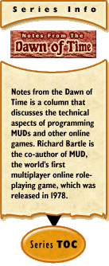

|
Notes from the Dawn of Time #11: Lexical Analysisby Richard Bartle In my last article, I overviewed command line input — the process by which a series of keystrokes (e.g. SAY HOW T^HDO YOU TYE^HPE SO FAST/^H?) is converted into an input line (e.g. SAY HOW DO YOU TYPE SO FAST?). This time, I’ll be discussing how pre-processing works — how an input line (e.g. steal key^Ifrom *KeWlD00d*) is converted to single-case and stripped of spurious characters so as to fit a standard format (e.g. STEAL KEY FROM KEWLD00D). Nah — it’s clear to any programmer how to do it, you don’t need me to patronize you by stating the blindingly obvious... The only thing I’d say to look out for is handling strings — data contained between two quotation marks (or, more likely, one quotation mark and the end of the line). A MUD can do a lot more fancy stuff if it can accept strings, but you mustn’t over-normalise them. If a player character shouts "I *really* need a BATH" then you don’t want everyone to see "I REALLY NEED A BATH". Remove control and escape characters so as not to screw up the recipients’ screens, but leave case and (non-leading/trailing) white space untouched. TokenisationParsing actually starts to get interesting with tokenisation. This is where input is finally converted into a form that the players couldn’t have typed in directly. Here’s the gist of it. You take a pre-processed input line and chunk it into units called symbols. A symbol is one of:
OK, now what you need from the tokeniser is a list of tokens. These are nodes that represent multiple parts of speech (nouns, verbs etc.), of which the main part of the parser can then attempt to make sense. They usually consist of three elements:
For strings, the type will be some predefined constant, such as T_STRING, StringType or whatever your naming convention decrees. The data will be the body of the string, e.g. WHAT?!!. The set of parts of speech will contain some representation for nouns, and maybe also for verbs. I’ll write this as [noun, verb]. Don’t panic, I shall explain parts of speech in detail when I reach the main parsing process in a later article. For integers, the type will be T_INTEGER or IntegerType or whatever, and the data will be a number such as 142857. The set of parts of speech will be at least [noun, adjective], with maybe some others thrown in too. Punctuation marks will have their own predefined nodes. You can look them up in a table, it’s simple enough. If you like, you can point some of them to the same record, e.g. question marks and exclamation marks could be mapped to the same node as a full stop (my apologies to American readers, I know you call these latter two "exclamation points" and "periods"). This brings us to words... The VocabularyWords must be translated into atoms (from the inheritance hierarchy, as I described earlier in this set of articles). The data structure linking the two is the vocabulary. This consists of a symbol table that connects words, parts of speech (PoS) and atoms. Here’s an extract showing what a vocabulary might contain:
If a player typed HIT ORANGE BOX then the tokeniser would need to look up all definitions of each word and the appropriate possible meanings, i.e.:
This is done by means of a dictionary mechanism. I’m not going to go into the details of writing one of these — dictionaries are fairly common data structures. If you’re not using one from a library, a hash table with binary tree overflow usually does the business. So long as you have a reasonably efficient mechanism by which a word can be used to retrieve its matching record, that’s enough. There are two further points to consider about vocabularies. Firstly, you might want to add a fourth component to each tuple to represent privilege level. If there are some commands that only admins should have, then there’s no reason these should be in the vocabulary for non-admins — it adds an extra level of security. Secondly, some links need only be unidirectional. In the above example, the verb for BOX is just a synonym that points to the same atom as HIT. If during execution of [hit]() you wished to refer to the issuing command by looking backwards through the vocabulary, you wouldn’t want it to come up with BOX. Therefore, some kind of flag to note that a command is a synonym or an abbreviation is also in order. Aside: if you did want [hit]() to refer to BOX then you would use
which when invoked would be [box_hit](). If box_hit were declared as a subclass of hit, then the code which was invoked would be the same as for [hit]() but when the action/verb atom was referred to it would come up as box_hit. LookaheadAs I’ve described it so far, tokenisation is a breeze. You have an array of characters, which you scan sequentially. Depending on what you see first, you’ll either have a string, an integer, a word or punctuation. You read in the whole unit, create a node for it, ignore white space and move on to the next word. Easy! Well almost, but not quite. There’s a slight blur between integers, punctuation and words. Some pieces of punctuation can map directly onto words (see the discussion on modes which follows), and some words can map directly onto integers (e.g. TEN is 10). OK, I’m sure you can handle that now you know in advance to program for it, but there’s a further problem: it’s possible that some words can carry implicit punctuation effects. When you look up a word, you therefore ought to check whether it affects the remainder of the sentence. In particular, you should look out for enquoting verbs. Enquoting verbs are verbs that implicitly quote the remainder of a sentence. A normal verb is an action, for example LAUGH. Verbs can take parameters (unfortunately called objects in grammatical terms), for example EAT CHEESE. Some verbs can take strings as parameters, for example WRITE "none of the above" ON BALLOT PAPER. Now, for a few of those verbs that take strings as a parameter, you really don’t want to have to put in the quotes every time, for example SAY "hidey hi!". People would much rather type it without the quotes. If they did that, though, the remainder of the sentence would be taken as regular input, yet sadly SAY HIDEY HI! doesn’t parse — it’s not proper English (or proper anything else!). By making SAY is an enquoting verb, however, the problem disappears. If the next symbol following SAY isn’t a string (i.e. doesn’t begin with a quotation mark), then the tokeniser will assume it’s seen one anyway and enquote the rest of the line. Occasionally you do need to put the marks (e.g. SAY "hello" TO BILL), but if there’s only one parameter you don’t. You can also implement verbs that enquote their second parameter, e.g. TELL BILL TO "go west"; they’re not much harder to do. Apart from their effects on tokenisation, either kind of enquoting verb is otherwise just the same as any normal verb. Because each time you look up a symbol you have to check to see if it affects the remainder of the parse, it’s a one-symbol lookahead system. Computer languages are typically designed so that you can parse a whole program by deciding what to do next at any point solely on the basis of what symbol you’re looking at. As we’ll discover, though, things do get a bit harder for MUDs at the grammatical (rather than the word) level. ModesSometimes, you want to talk directly to the tokeniser to tell it how you want stuff tokenised. If it parsed this input like a normal command, it wouldn’t know it was supposed to do something special as a result. More importantly, it might not be able to parse it at all! What I’ve been describing so far is command mode. This is where what you type is considered to be a command. For MUDs, command mode is the mode in which people spend most of their time. There are, however, other modes you can have. The convention that has evolved is to put special characters at the beginning of a line to tell the tokeniser to operate in a different mode for that line, with a further option to switch into the mode the whole time until further notice. For example, @ might mean "coding mode for this line only" and /@ might mean "coding mode for this and subsequent lines". Here are some examples of common modes and the start-of-line flags they tend to use (some of which conflict with others):
Command mode is the default in text MUDs. Conversation mode is the default in graphical MUDs.
|